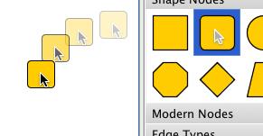
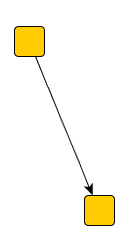
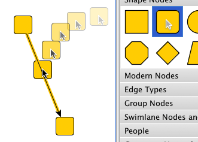
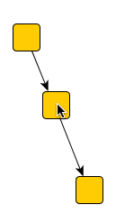
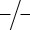
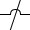
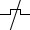
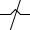

| View Implementations | ||
|---|---|---|
| Prev | Chapter 6. Displaying and Editing Graphs | Next |
A view, as described by the Model-View-Controller (MVC) paradigm, is responsible for presenting the model to the user. Also, events generated by the user are propagated to the proper controller classes that handle user interaction.
Interface View sets the general frame for
actual yFiles view implementations.
It provides for a getter method for the contained Graph2D instance, and for
methods that are called to update, i.e., (re)paint, either the view's entire
content or only (a specified rectangular) part of it.
Figure 6.39, “Class hierarchy for view implementations” gives an overview of the predefined views
and their connection to the graph structure.
sets the general frame for
actual yFiles view implementations.
It provides for a getter method for the contained Graph2D instance, and for
methods that are called to update, i.e., (re)paint, either the view's entire
content or only (a specified rectangular) part of it.
Figure 6.39, “Class hierarchy for view implementations” gives an overview of the predefined views
and their connection to the graph structure.
Figure 6.40, “Major view implementations” shows the major view implementations provided by
package y.view in
an application context.
Class Graph2DView fills the right side
of the application frame, an associated instance of
class Overview is in the upper left.
in
an application context.
Class Graph2DView fills the right side
of the application frame, an associated instance of
class Overview is in the upper left.
The canvas on which a graph is painted is an instance of type
Graph2DView .
It is plainly called "the view," or is referred to as "the viewport."
(The latter term is most notably used whenever the view's dimension is of
particular importance.)
The view is responsible for invoking all necessary actions to paint the
elements of the contained graph whenever it is asked to.
.
It is plainly called "the view," or is referred to as "the viewport."
(The latter term is most notably used whenever the view's dimension is of
particular importance.)
The view is responsible for invoking all necessary actions to paint the
elements of the contained graph whenever it is asked to.
Though a graph can be displayed by multiple views at the same time, a view can contain and display at most one graph. Figure 6.41, “Class hierarchy for class Graph2DView” shows the inheritance structure for class Graph2DView.
To access the view's actual canvas component, e.g., to use it as a drop target in a drag-and-drop operation, class Graph2DView provides this method:
JComponent getCanvasComponent() |
|
| Description | Returns the view's canvas component. |
Getting the view's glass pane is achieved using the following method. The glass pane can conveniently be used to create overlays, for example, using the user interface elements provided by class NavigationComponent or using class Overview.
JPanel getGlassPane() |
|
| Description | Returns the view's glass pane. |
Creating an overlay using the glass pane can be seen in tutorial demo application FullScreenNavigationDemo.java.
Graph2DView provides convenience functionality to directly invoke an automatic layout calculation on the Graph2D it is holding. The following methods use the services of class Graph2DLayoutExecutor.
void applyLayout(Layouter layouter) |
|
| Description | Invokes automatic layout calculation on the view's Graph2D. |
There are different coordinate spaces used in the model itself and for its presentation in the view, the so-called "world coordinates" and the view coordinates.
The common thing to both world and view coordinate space is the way coordinates increase with each direction. Coordinates on computer screens most commonly increase from left to right and from top to bottom. Note that this is diametrical to the normal Cartesian coordinate system known from school where coordinates increase from left to right and from bottom to top.
The view coordinates always start with (0,0) for the upper left corner and increase to the right and to the bottom. The coordinates of the lower right corner accordingly equals to (view_width-1, view_height-1), i.e., the view coordinates directly reflect the viewport's size.
The world coordinates, in contrast, are those valid in the model, i.e., they denote the proper locations that are set for a node's center or the control points of an edge.
One characteristic of world coordinates is that they can have negative values, while view coordinates are always positive.
The mapping from one coordinate space to the other happens automatically and is achieved using the notion of the so-called "view point" and scaling. The view point determines the world coordinates that get directly mapped to the upper left corner of the viewport, i.e., it defines where the view's origin lies in the world coordinates's two-dimensional space.
An additional scaling factor that can be applied to the world coordinates determines the zoom level with which the view scales the model's presentation. The following methods are available to control view point and scaling:
double getZoom() |
|
| Description | Methods to control view point and scaling. |
Example 6.30, “Coordinate conversion methods” shows the coordinate conversion using the view point and scaling in full detail. Note that the listed methods can just as well be called explicitly for any coordinate conversions required.
Example 6.30. Coordinate conversion methods
// From world to view coordinates...
int toViewCoordX(double x){ return (int)((x - viewPoint.x) * zoom); }
int toViewCoordY(double y){ return (int)((y - viewPoint.y) * zoom); }
// ... and vice-versa.
double toWorldCoordX(int x){ return x/zoom + viewPoint.x; }
double toWorldCoordY(int y){ return y/zoom + viewPoint.y; }
Class Graph2DView offers several methods to conveniently manipulate the viewport and reflect any viewport changes to the model. The most notable of these methods control the view's zoom level, its center, or its size and location (i.e., the view point).
Also, controlling the view's behavior to automatically adapt to the bounding box of the graph is supported. The following methods support changing the view's clipping:
When the bounding box of a graph is calculated, for example due to a call to
fitContent ,
Graph2DView's content policy governs what kinds of graphical elements are
considered for the calculation.
By default, only the visual representations for nodes and edges are considered,
i.e., only
the results of invoking the calcUnionRect methods
of node realizers and edge realizers determine the dimension of the bounding
box.
Including further kinds of graphical elements like, e.g., graph drawables,
foreground drawables, and background drawables can be easily achieved using the
setContentPolicy
,
Graph2DView's content policy governs what kinds of graphical elements are
considered for the calculation.
By default, only the visual representations for nodes and edges are considered,
i.e., only
the results of invoking the calcUnionRect methods
of node realizers and edge realizers determine the dimension of the bounding
box.
Including further kinds of graphical elements like, e.g., graph drawables,
foreground drawables, and background drawables can be easily achieved using the
setContentPolicy method as presented in Example 6.31, “Changing the content policy to additionally include all background drawables”.
method as presented in Example 6.31, “Changing the content policy to additionally include all background drawables”.
Example 6.31. Changing the content policy to additionally include all background drawables
// 'view' is of type y.view.Graph2DView.
// Additionally includes all background drawables when calculating the graph's
// bounding box.
view.setContentPolicy(Graph2DView.CONTENT_POLICY_GRAPH |
Graph2DView.CONTENT_POLICY_BACKGROUND_DRAWABLES);
The content policy is also taken into account when calling method
updateWorldRect .
.
The following getter and setter methods control the policy settings of class Graph2DView's already built-in scroll bars. By default, they obey the policy settings HORIZONTAL_SCROLLBAR_AS_NEEDED and VERTICAL_SCROLLBAR_AS_NEEDED as defined in interface javax.swing.ScrollPaneConstants.
Note that using JScrollPane objects with Graph2DView is neither necessary nor supported, i.e., with respect to scroll bars class Graph2DView differs in behavior compared to normal Java Swing components.
Furthermore, Graph2DView knows the UnitIncrementPixels client property which can be used to specify the unit increment for the scroll bars. The integral value for this property is interpreted in view coordinate space.
Class Graph2DView optionally supports rendering of a grid in the background of a graph. (See below for details on the rendering order that is applied for the visual representation of a graph.)
The grid's parameter as well as all its graphical attributes can be fully customized using the following methods.
When the view renders a grid in the background of a graph, it is in so-called
"grid mode."
The predefined yFiles view modes (see the section called “User Interaction”) query
the view for this exact state (using Graph2DView's
getGridMode() method) and
then apply special logic that snaps coordinates to proper grid points.
method) and
then apply special logic that snaps coordinates to proper grid points.
The look of the selection box that is drawn when a user selects multiple graph elements with a mouse drag gesture can be conveniently customized using a set of client properties that are recognized by class Graph2DView. Table 6.12, “Selection box-related client properties of class Graph2DView” lists the clients properties related to selection box rendering.
Table 6.12. Selection box-related client properties of class Graph2DView
| Client Property | Value Type | Description |
|---|---|---|
| selectionbox.rectangularshape | RectangularShape | A java.awt.geom.RectangularShape object that provides the shape representation of the selection box. |
| selectionbox.fillcolor | Color | A (transparent) java.awt.Color that is used to fill the selection box. |
| selectionbox.linecolor | Color | A java.awt.Color that is used to draw the border of the selection box. |
| selectionbox.stroke | Stroke | A java.awt.Stroke object that is used to draw the border of the selection box. |
Alternatively, selection box rendering can be completely re-defined by means of this method:
protected void paintSelectionBox(Graphics2D gfx, Rectangle2D box) |
|
| Description | Selection box-related methods. |
The visual representation of a graph that is rendered to a view, is composed of five different layers where graph elements and further graphical objects are placed. From background to foreground these layers are:
Class DefaultBackgroundRenderer is the
default implementation of interface BackgroundRenderer.
It handles the rendering of any background graphics, e.g., images, patterns, or
colors.
is the
default implementation of interface BackgroundRenderer.
It handles the rendering of any background graphics, e.g., images, patterns, or
colors.
Class DefaultGraph2DRenderer is the
default implementation of interface Graph2DRenderer and also interface
OrderRenderer.
Its responsibility is to invoke the realizer that is bound to a graph element
and make this realizer actually render the graph element.
The rendering order for the graph elements that is established by
DefaultGraph2DRenderer is used in reverse when collecting hit-testing
information for graph elements.
See also the description for class HitInfo.
is the
default implementation of interface Graph2DRenderer and also interface
OrderRenderer.
Its responsibility is to invoke the realizer that is bound to a graph element
and make this realizer actually render the graph element.
The rendering order for the graph elements that is established by
DefaultGraph2DRenderer is used in reverse when collecting hit-testing
information for graph elements.
See also the description for class HitInfo.
Depending on the current zoom level and the value set using method
setPaintDetailThreshold DefaultGraph2DRenderer calls either the realizer's normal rendering logic or the
method that does less-detail rendering.
DefaultGraph2DRenderer calls either the realizer's normal rendering logic or the
method that does less-detail rendering.
Less-detail rendering is invoked whenever the current zoom level is below the value set for the paint detail threshold. In effect, it means that a graph element is painted omitting any details that would clutter the display, i.e., rendering is confined to those things that make up the outline of a graph element.
In particular, this feature is useful in an overview window to concentrate on the structure of a graph rather than the representations of its elements. More generally, however, less-detail rendering saves resources by skipping expensive features like text or shadows.
The descriptions in the section called “Bringing Graph Elements to Life: The Realizer Concept” have further explanations on the specific less-detail rendering for the predefined node and edge realizers.
Further control over less-detail rendering for the elements in a view can be achieved by using rendering hints.
By default, the sequence that is used to draw graph elements is first all nodes, then all edges. However, class DefaultGraph2DRenderer also allows to revert this behavior, i.e., optionally edges can be drawn before nodes.
Within each set of graph elements their respective sequence from first to last
also determines their drawing order, so that the last node from the graph's
node set, for example, is rendered atop all other nodes.
Using the methods from class Graph , the rendering
order for both types of graph elements can easily be adjusted by changing the sequence
of their respective set:
, the rendering
order for both types of graph elements can easily be adjusted by changing the sequence
of their respective set:
void moveToFirst(Node v) |
|
| Description | Moving graph elements to the front of their set. |
void moveToLast(Node v) |
|
| Description | Moving graph elements to the back of their set. |
For grouped graphs, DefaultGraph2DRenderer does not use the sequence of nodes directly, but instead queries the HierarchyManager instance that is registered with a root graph to determine the actual rendering order of nodes.
To reflect node order changes also for grouped graphs, class
HierarchyManager offers
corresponding methods to change the sequence of nodes within their respective
parent entity (either root graph, group node, or folder node; see also
Chapter 7, Graph Hierarchies for the descriptions of these terms and
concepts).
As a consequence, all Graph operations that affect the node order have to be
accompanied by corresponding HierarchyManager operations for the particular
node.
See Table 6.13, “Corresponding node order methods”.
offers
corresponding methods to change the sequence of nodes within their respective
parent entity (either root graph, group node, or folder node; see also
Chapter 7, Graph Hierarchies for the descriptions of these terms and
concepts).
As a consequence, all Graph operations that affect the node order have to be
accompanied by corresponding HierarchyManager operations for the particular
node.
See Table 6.13, “Corresponding node order methods”.
Table 6.13. Corresponding node order methods
| Graph | HierarchyManager |
|---|---|
| moveToFirst(Node) |
moveToFirst(Node) |
| moveToLast(Node) |
moveToLast(Node) |
Fine-grained control over the drawing order of graph elements can be achieved by using DefaultGraph2DRenderer's support for so-called "layered painting." It provides the means to render nodes and edges in arbitrary order.
Layered painting introduces the notion of "layers," where graph elements can reside in for rendering. The layers are numbered and they are rendered in ascending order, i.e., graph elements in a layer with a small index are rendered before those in a layer with a higher index. Within a layer there can be both nodes and edges; also there can be an arbitrary number of graph elements of either type in a layer.
The rendering order for the graph elements within a layer is governed by the overall settings of DefaultGraph2DRenderer. In particular, this includes whether edges should be drawn before nodes or vice-versa.
Listed below are the methods that enable layered painting and also the callback methods for specifying the actual layer that a node or an edge should reside in for rendering:
boolean isLayeredPainting() |
|
| Description | Getter and setter methods for layered painting. |
protected int getLayer(Graph2D graph, Node node) |
|
| Description | Callback methods for specifying a graph element's layer. |
Further functionality of class DefaultGraph2DRenderer is described in the section called “Class DefaultGraph2DRenderer”.
Another option provided is to enable/disable anti-aliased rendering for the entire viewport, i.e., for all graphical objects therein. The following methods of Graph2DView can be used to control the paint detail threshold respectively anti-aliasing:
double getPaintDetailThreshold() |
|
| Description | Paint detail and anti-alias methods of Graph2DView. |
Foreground and background drawables are additional graphical objects of type
Drawable that can be added to the visual
representation of a graph.
The discussion of interface Drawable shows
more details on this type.
The following Graph2DView methods that can be used to add and remove drawables:
that can be added to the visual
representation of a graph.
The discussion of interface Drawable shows
more details on this type.
The following Graph2DView methods that can be used to add and remove drawables:
void addBackgroundDrawable(Drawable d) |
|
| Description | Adding an object of type y.view.Drawable. |
void removeBackgroundDrawable(Drawable d) |
|
| Description | Removing an object of type y.view.Drawable |
Rendering hints are an aspect of the Java2D rendering engine, originally. They are used in conjunction with the Graphics2D class to specify preferences for rendering algorithms.
Class Graph2DView uses the same mechanism as a useful means to help in two different scenarios. The first is to provide applications with information about the current rendering context. To this end, class Graph2DView associates a rendering hint with the java.awt.Graphics2D object that is used for the rendering operations. The rendering hint is an instance of class GraphicsContext, which can be queried whether the current graph is printed or exported, for example.
The second scenario is to control aspects of the rendering process of the view. For example, whether the state labels of group nodes should be painted, or whether expensive features such as gradients should be reduced to a single color in order to save resources.
This can be used especially in situations where a low drawing complexity is wanted, like in an overview view for a graph. Or, more generally, on low-resolution devices that are not capable of showing high-fidelity graphics. Or in a navigation-only view that prevents interaction with group nodes (collapsing/expanding).
Both types of scenarios can be easily combined, for example, to suppress painting of state labels of group nodes when printing.
The following methods enable the configuration of rendering hints associated with the Graph2DView:
RenderingHints getRenderingHints() |
|
| Description | Getter and setter method for Graph2DView's rendering hints. |
Class YRenderingHints defines rendering hints
that enable fine-grained control over what gets painted in a view:
defines rendering hints
that enable fine-grained control over what gets painted in a view:
Table 6.14. Rendering hints
| Rendering Hints Key | Description |
|---|---|
| KEY_GROUP_STATE_PAINTING |
Can be used to control the rendering of the state label of group nodes. Values support three states: Default, On, Off. |
| KEY_NODE_LABEL_PAINTING |
Can be used to control the rendering of node labels. Values support three states: Default, On, Off. |
| KEY_EDGE_LABEL_PAINTING |
Can be used to control the rendering of edge labels. Values support three states: Default, On, Off. |
| KEY_NODE_PORT_PAINTING |
Can be used to control the rendering of node ports. Values support three states: Default, On, Off. |
| KEY_SELECTION_PAINTING |
Can be used to disable the rendering of selection indications of elements in the view. |
| KEY_GRADIENT_PAINTING |
Can be used to switch gradient rendering of node representations in the view to use a single color only. |
| KEY_SHADOW_PAINTING |
Can be used to disable the rendering of shadows of node representations in the view. |
| KEY_SLOPPY_POLYLINE_PAINTING |
Can be used to switch the sloppy rendering style of polyline edges. |
Hiding the state labels of group nodes, for example, can be easily achieved setting a rendering hint as follows:
Example 6.32. Hiding the state label of group nodes
// 'view' is of type y.view.Graph2DView.
RenderingHints hints = view.getRenderingHints();
// Hiding the state labels (the open/close sign) of group nodes.
hints.put(YRenderingHints.KEY_GROUP_STATE_PAINTING,
YRenderingHints.VALUE_GROUP_STATE_PAINTING_OFF);
Tutorial demo application LevelOfDetailDemo.java presents the effects of using rendering hints to control the rendering process of elements in the view.
Class DropSupport can be used to add support
for drag-and-drop gestures from another component to a Graph2DView.
It handles the "drop" part of such gestures and enables dropping of node realizer
and edge realizer instances onto a view.
can be used to add support
for drag-and-drop gestures from another component to a Graph2DView.
It handles the "drop" part of such gestures and enables dropping of node realizer
and edge realizer instances onto a view.
Figure 6.45. Drag-and-drop gesture from a palette
|

|
| Dragging a node from a palette into the canvas. |
Note that a dragged edge realizer can actually only be dropped onto a node in the view, which then starts an edge creation gesture.
As part of the drag-and-drop gesture when dragging a node realizer in particular, DropSupport also supports:
The following sequence illustrates the edge-split gesture:
Figure 6.46. Drag-and-drop edge splitting gesture
|

|

|

|
| Original edge in the canvas. | Dragging a node from a palette onto the edge. To indicate the edge-split gesture, the edge is highlighted as the node is over it. | The original edge is split in two with the dropped node connecting the two edges. |
Edge splitting can be enabled using the following method of class DropSupport:
Inner class DropSupport.EdgeSplitSupport provides
configuration options for edge splitting aspects.
provides
configuration options for edge splitting aspects.
Example 6.33. Enabling and configuring edge splitting
// When a node is dropped onto an edge, split the edge in two. dropSupport.setEdgeSplittingEnabled(true); // When an edge is split, remove bends that lie inside the bounds of the newly // created node. dropSupport.getEdgeSplitSupport().setRemovingInnerBends(true);
The following applications serve as an introduction to class Graph2DView's features:
Class Overview is a specialization of
Graph2DView that always shows a graph in its entirety.
It has an instance of its superclass associated and displays the same graph as
this instance.
is a specialization of
Graph2DView that always shows a graph in its entirety.
It has an instance of its superclass associated and displays the same graph as
this instance.
Additionally, a visual feedback for the current clipping area of the associated Graph2DView instance is superposed. This superposed rectangle can be moved using the mouse, thereby moving the clipping area accordingly.
Class Overview allows to customize the actual appearance of this visual indication and also many aspects of user interaction. For example, the area either inside or outside of the rectangle can be blurred, different scrolling behaviors can be set, or mouse wheel support to directly change the zoom level of the associated Graph2DView instance can be enabled.
To reduce drawing complexity, class Overview does not display the graph in the same manner as the associated Graph2DView instance. Instead, the graph is displayed with far less details, e.g., the labels are missing, there are no arrows at the ends of edges and nodes are always drawn as rectangles.
Class DefaultGraph2DRenderer is the
default implementation of interface Graph2DRenderer and also interface
OrderRenderer.
Its responsibility is to invoke the realizer that is bound to a graph element
and make this realizer actually render the graph element inside the view.
(See also the section called “Rendering Order” for a description of how
DefaultGraph2DRenderer interacts with the view.)
is the
default implementation of interface Graph2DRenderer and also interface
OrderRenderer.
Its responsibility is to invoke the realizer that is bound to a graph element
and make this realizer actually render the graph element inside the view.
(See also the section called “Rendering Order” for a description of how
DefaultGraph2DRenderer interacts with the view.)
DefaultGraph2DRenderer optionally allows to use the services of class
BridgeCalculator to insert so-called
"bridges" into edge paths.
Bridges are a means to resolve the visual ambiguity induced by intersecting
edge paths.
Each segment of an edge path that intersects with at least one other segment
(from either the same or another edge path) which has already been rendered,
can be augmented with a bridge in one of a variety of different styles.
to insert so-called
"bridges" into edge paths.
Bridges are a means to resolve the visual ambiguity induced by intersecting
edge paths.
Each segment of an edge path that intersects with at least one other segment
(from either the same or another edge path) which has already been rendered,
can be augmented with a bridge in one of a variety of different styles.
Alternatively, instead of using the drawing order induced by the edge set to determine which segment to augment, the set of edge segments that are subject to augmentation can be restricted with respect to segment orientation. Edge segments that have either predominant horizontal or vertical orientation can be chosen to always lie atop of edge segments having contrary orientation. Table 6.15, “Bridge styles of class BridgeCalculator” presents several of the bridge styles available with BridgeCalculator.
Table 6.15. Bridge styles of class BridgeCalculator
| Constant Name | Bridge Style |
|---|---|
| CROSSING_STYLE_GAP |

|
| CROSSING_STYLE_ARC |

|
| CROSSING_STYLE_SQUARE |

|
| CROSSING_STYLE_TWOSIDES |

|
By default, augmenting edge paths with bridges is only supported for straight-line segments of poly-line edge paths, i.e., in particular for edge realizers of type PolyLineEdgeRealizer.
Example 6.34, “Using class BridgeCalculator with DefaultGraph2DRenderer” shows how to add a BridgeCalculator instance to a view's DefaultGraph2DRenderer object.
Example 6.34. Using class BridgeCalculator with DefaultGraph2DRenderer
void enableBridgesForEdgePaths(Graph2DView view) {
Graph2DRenderer gr = view.getGraph2DRenderer();
if (gr instanceof DefaultGraph2DRenderer) {
DefaultGraph2DRenderer dgr = (DefaultGraph2DRenderer)gr;
// If there is no BridgeCalculator instance set, ...
if (dgr.getBridgeCalculator() == null) {
// ... then register a newly created one that uses default settings.
dgr.setBridgeCalculator(new BridgeCalculator());
}
}
}
Tutorial demo application BridgeDemo.java demonstrates how the bridging functionality of DefaultGraph2DRenderer is enabled to resolve intersecting edge paths. BridgeEdgeRealizerDemo.java shows how class BridgeCalculator can be used in conjunction with an implementation of class GenericEdgeRealizer.
Class GraphicsContext provides additional
context information to implementations during painting and rendering.
It is set as a rendering hint with the
java.awt.Graphics2D object that the view uses for the
rendering operations.
provides additional
context information to implementations during painting and rendering.
It is set as a rendering hint with the
java.awt.Graphics2D object that the view uses for the
rendering operations.
The GraphicsContext object is registered with a Graphics2D ínstance using the
rendering hints key
GRAPHICS_CONTEXT_KEY .
It can be retrieved using a convenience method from class YRenderingHints as
shown in Example 6.35, “Getting the GraphicsContext object from a Graphics2D instance”.
.
It can be retrieved using a convenience method from class YRenderingHints as
shown in Example 6.35, “Getting the GraphicsContext object from a Graphics2D instance”.
Example 6.35. Getting the GraphicsContext object from a Graphics2D instance
// 'gfx' is of type java.awt.Graphics2D. GraphicsContext graphicsContext = YRenderingHints.getGraphicsContext(gfx);
The information that is made available by class GraphicsContext enables applications to easily discern rendering contexts. For example, whether a graph is currently
Depending on the actual context, applications could then apply different rendering behavior for a graph's elements.
The following getter methods from class GraphicsContext can be used to query information relating to the rendering context. This information also includes a reference to the view and the transformation it is using.
Graph2DView getGraph2DView() |
|
| Description | Getter methods of class GraphicsContext. |
Interface Drawable sets the general frame
for graphical objects that should be added to the visual presentation of a
graph and be automatically (re)painted whenever necessary.
Class Graph2DView has support to add Drawable implementations (or "drawables"
for short) either to the foreground or the background of a graph.
Similar support is provided to remove drawables.
sets the general frame
for graphical objects that should be added to the visual presentation of a
graph and be automatically (re)painted whenever necessary.
Class Graph2DView has support to add Drawable implementations (or "drawables"
for short) either to the foreground or the background of a graph.
Similar support is provided to remove drawables.
Foreground drawables will be drawn above all graph elements, while background drawables will be drawn underneath.
As with graph elements it is important for a drawable that it provides information about its bounds. The proper dimension and location of all objects that have to be rendered are essential for correctly (re)painting a view's content.
Table 6.16, “Drawable implementations” gives a brief overview on convenience implementations for interface Drawable.
Table 6.16. Drawable implementations
| Classname | Description |
|---|---|
| CompositeDrawable |
Defines a new drawable by composing already existing ones. |
| ShapeDrawable |
Allows to use an existing java.awt.Shape object to define its visual representation. |
The tutorial demo application DrawablesDemo.java shows the implementation of drawables and how they are added to the graph.
Class ViewCoordDrawableAdapter is a
special adapter class that can be used in conjunction with Drawable
implementations that draw themselves in view coordinate space.
Most prominently, this includes the zoom indicator available with class
Graph2DViewMouseWheelZoomListener.
is a
special adapter class that can be used in conjunction with Drawable
implementations that draw themselves in view coordinate space.
Most prominently, this includes the zoom indicator available with class
Graph2DViewMouseWheelZoomListener.
Classes Graph2DViewMouseWheelZoomListener and Graph2DViewMouseWheelScrollListener
and Graph2DViewMouseWheelScrollListener are
java.awt.event.MouseWheelListener implementations that add
convenient mouse wheel zooming and mouse wheel scrolling, respectively to a view.
Example 6.36, “Adding mouse wheel zooming to a view” outlines how mouse wheel zooming can be enabled
using the addToCanvas
are
java.awt.event.MouseWheelListener implementations that add
convenient mouse wheel zooming and mouse wheel scrolling, respectively to a view.
Example 6.36, “Adding mouse wheel zooming to a view” outlines how mouse wheel zooming can be enabled
using the addToCanvas method.
Mouse wheel scrolling is enabled similarly.
method.
Mouse wheel scrolling is enabled similarly.
Example 6.36. Adding mouse wheel zooming to a view
// 'view' is of type y.view.Graph2DView. // Create a default mouse wheel zoom listener. Graph2DViewMouseWheelZoomListener mwzl = new Graph2DViewMouseWheelZoomListener(); // Register it with the given view's canvas component. mwzl.addToCanvas(view);
The removeFromCanvas method removes the mouse wheel listener from the view again.
method removes the mouse wheel listener from the view again.
Graph2DViewMouseWheelZoomListener offers several configuration options that can be used to specify mouse wheel zooming behavior. This includes minimum and maximum values for the zoom level, for example, or which mouse wheel scroll direction maps to zooming in.
As an additional visual feedback when zooming, an animated zoom indicator can be displayed. The following methods from class Graph2DViewMouseWheelZoomListener can be used to configure the zoom indicator:
void setZoomIndicatorShowing(boolean zoomIndicatorShowing) |
|
| Description | Zoom indicator methods. |
void setZoomIndicatorColor(Color zoomIndicatorColor) |
|
| Description | Zoom indicator color. |
Configuration options of Graph2DViewMouseWheelScrollListener include which modifier key to press in order to switch from vertical to horizontal scrolling and whether mouse wheel scrolling should automatically map to the horizontal direction if only this scrollbar is visible.
void setHorizontalScrollingModifierMask(int mask) |
|
| Description | Configures the modifier key for switching the scrolling direction. |
void setSmartScrollingEnabled(boolean enabled) |
|
| Description | Smart scrolling behavior when only one scrollbar is visible. |
Class NavigationComponent provides
ready-to-use user interface (UI) elements that conveniently allow zoom in and
zoom out operations on the view, as well as moving the viewport.
provides
ready-to-use user interface (UI) elements that conveniently allow zoom in and
zoom out operations on the view, as well as moving the viewport.
Figure 6.49, “Navigation controls and zoom controls” depicts the default setup for the UI elements available with NavigationComponent:
The presentation of either group of controls can be customized using the following methods. For example, the fit content button can be omitted from the group of navigation controls, leaving only the four arrow buttons.
In addition, the arrangement of both groups can be controlled using the
setOrientation method.
For example, they can also be placed side by side with the zoom slider being
drawn horizontally.
method.
For example, they can also be placed side by side with the zoom slider being
drawn horizontally.
The navigation controls furthermore allow to specify settings related to moving the viewport, this includes in particular:
Note that the scroll timer delay is set using a client property.
Example 6.37, “Using the navigation component on a glass pane” shows how the navigation controls provided by NavigationComponent can be placed as a transparent overlay on a view. A similar setup is used in tutorial demo application FullScreenNavigationDemo.java.
Example 6.37. Using the navigation component on a glass pane
public void addNavigationComponent(Graph2DView view) {
JPanel glassPane = view.getGlassPane();
glassPane.setLayout(new BorderLayout());
JPanel navigationPanel = createNavigationPanel(view);
glassPane.add(navigationPanel, BorderLayout.NORTH);
}
public JPanel createNavigationPanel(Graph2DView view) {
NavigationComponent navigationComponent = new NavigationComponent(view);
navigationComponent.setScrollStepSize(5);
navigationComponent.putClientProperty("NavigationComponent.ScrollTimerDelay",
new Integer(5));
JPanel panel = new JPanel(new BorderLayout());
panel.add(navigationComponent, BorderLayout.WEST);
panel.setOpaque(false);
panel.setBackground(null);
Dimension ps = navigationComponent.getPreferredSize();
Dimension dim =
new Dimension(((int) ps.getWidth() + 15), ((int) ps.getHeight() + 15));
panel.setPreferredSize(dim);
panel.setMinimumSize(dim);
return panel;
}
|
Copyright ©2004-2015, yWorks GmbH. All rights reserved. |